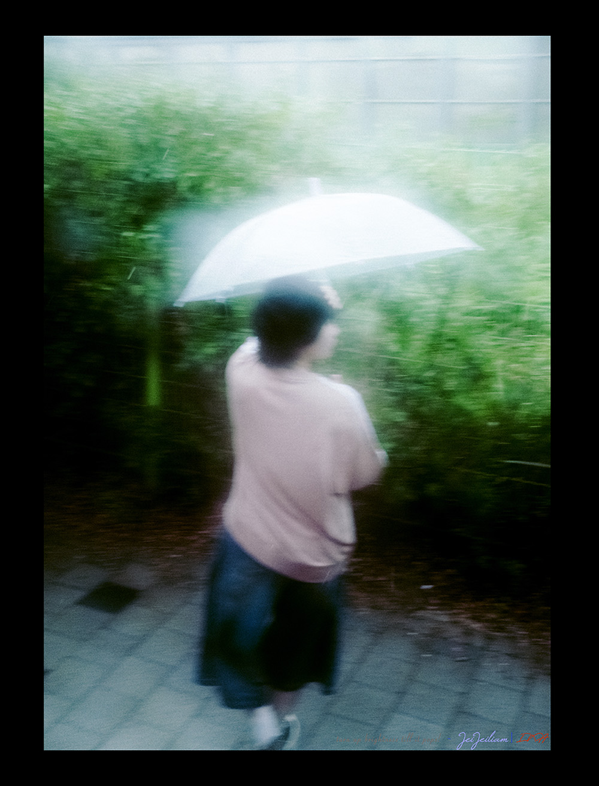
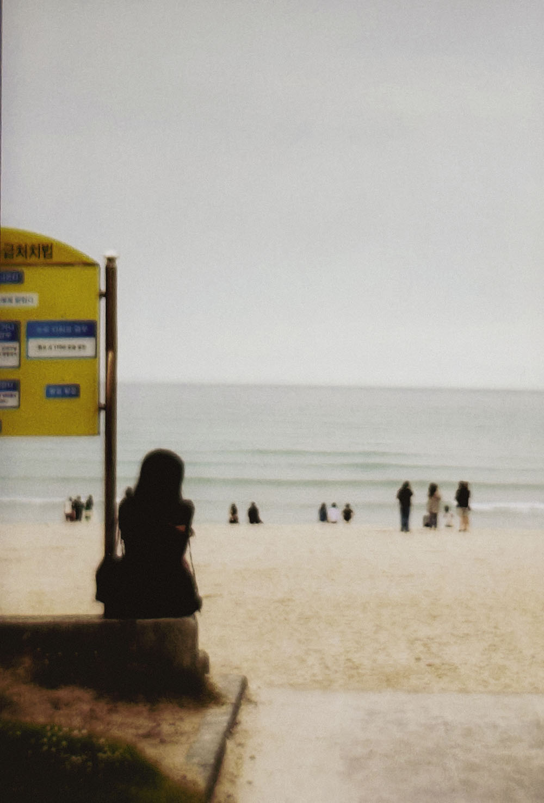

R E T R O
Cameras designed from the 1990s to 2010s were made to replicate colours as close to real life, however the technological advancements for cameras were not adequate, leading to imperfection in colours, random artifacting etc.
With those flaws built into the cameras, it did not stop people from buying them to record their own personal memories.
K A I Z E N
Kaizen is continuous improvement, a philosophy that exists in everyone even if you dont realise
When time passes, all cameras get improved with the continuous improvement from R&D, Which also makes modern cameras closer to perfection and losing their perks of being imperfect and "human".
C O L O U R S
Colours can change the vibe and perception of the photos taken. Here are some examples: (photos with possibly a slider to compare differences)
